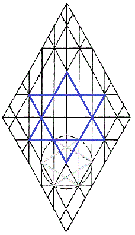
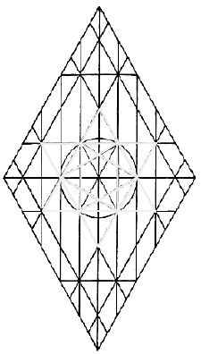

|
|
|
 |
|
 |
In each of the stars of the Churches
of Asia, there is a measurement that produces a hexagram, the
Star-shield of David.
This persistent pattern demonstrating
the joining of dalets (of equilateral triangles) suggests a knocking
at the perceptive hearts of mortal man;
may the
doors of our hearts be flung wide to the moment when spirit answers
to Spirit,
that the healing wings of Yah may lift
our perfecting souls along this path that leads to immortal realms.
|
|